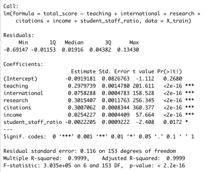
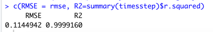
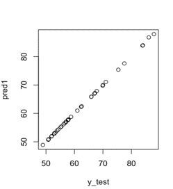
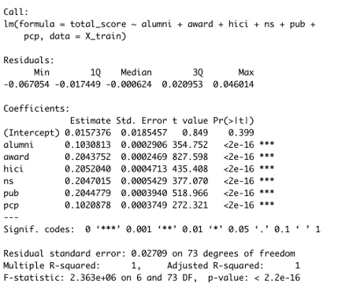
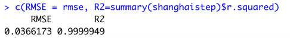
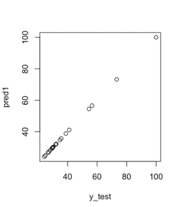
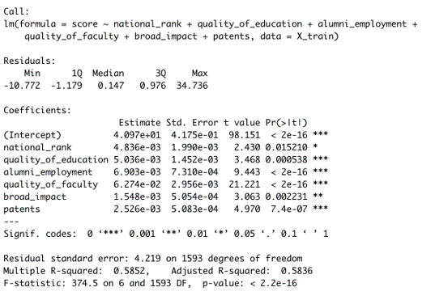
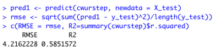
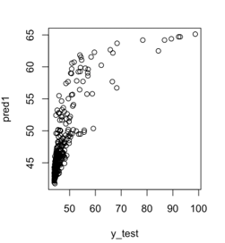

When we were initially considering what project to do, we knew we wanted to look into something that we already had some background knowledge about. We stumbled upon a Kaggle dataset that contained information about college ranking systems and we knew right off the bat that this was research that we would like to learn more about. Our main goal of this project was to determine what factors are considered more important than others when ranking colleges and universities and create a new ranking system based on those factors. The Kaggle consisted of the Times Higher Education World University Ranking, the Academic Ranking of World Universities, and the Center for World University Rankings datasets. In conducting our research, we had three key questions that we wanted to explore. What factors had more of an influence on the overall ranking of the universities than others? What are the most common/least common metrics used between the different rankings? Would the rankings change significantly if we combined all the significant factors from each of the three datasets into one ranking system?
We obtained the data from Kaggle. The data consisted of the Times Higher Education World University Ranking, the Academic Ranking of World Universities (Shanghai Ranking), and the Center for World University Rankings. Each of the different rankings had different factors. The Times ranking system had a teaching score, international score, research score, citations score, income score, and a total score. The teaching score is a number that represents the teaching/learning environment of the university. The international score represents the percentage of international students on campus. The research score represents the quality of research and number of publications that each university has. The citations score is similar to the research score. However, the citations score measures how many times the university’s research is cited. The income score measures the income levels of the university graduates. Finally, the total score takes into account all the other scores mentioned above and is ultimately used to determine the world ranking of the university. The Shanghai ranking consists of national rank, alumni score, award score, HiCi score, N&S score, PUB score, PCP score, and a total score. The national rank is where the university ranks within its domestic country. The alumni score represents the number of alumni that end up winning prizes and awards in their field. The award score represents the number of faculty and staff that win prizes and awards in their field. The HiCi score represents the number of Highly Cited researchers the university has. The N&S score represents the number of papers published in Nature and Science. The PUB score measures the number of papers indexed in Science Citation Index-Expanded and Social Science Citation. The PCP score is a weighted score of the above five scores divided by the number of full time academic staff. Finally, the total score represents a score that encompasses all the other scores and is used to determine the ranking of the university. The CWUR system includes national rank, quality of education rank, alumni employment rank, quality of faculty rank, publications rank, influence rank, and citations rank. This dataset is ordinal, meaning that each of those categories is a rank for that university rather than a score.
For The Times ranking system, we chose to not include data from before 2016 in order to reflect the latest information. Some of the universities were missing data for certain categories, and we replaced those missing data points with mean values. In total, we analyzed 200 universities. From the The Shanghai ranking, we chose not to include data before 2015 as wanted to have the latest information. We also replaced any missing values with the mean value for that category. In total, 100 universities were analyzed. The CWUR system, in order to perform a linear regression on this data, we needed to convert it to continuous data. In addition, some universities had missing data and were not used in the analysis. In total, we used 2001 records for the analysis.
Correlation analysis is done on the data for all the 3 datasets to analyze the correlation between different variables of the dataset, before doing the regression analysis. Below are the heat maps and the inferences.
We have built Linear Regression models in R with Total Score as the Class variable and other variables as predictor variables. We used 80:20 train:test ratio and Stepwise regression to eliminate the less significant predictor variables.
Teaching, International students, research, citations, income, student_staff_ratio are included in the final model. Model fit is good with multiple R squared 0.9999. Model is performing good on the test data with RMSE 0.1145.
  Alumni, award, HiCi, N&S, pub, pcp are included in the final model. Model fit is good with multiple R squared 1. Model is performing good on the test data with RMSE 0.0367.
  National rank, Quality of Education, Alumni Employment, Quality of Faculty, Broad Impact and patents are included in the final model. Model fit is not very good with multiple R squared 0.5852, as the data is not linear. Model is performing bad on the test data with RMSE 4.2162. Poor performance of the data is because of non linearity of data for higher total scores as displayed below in the plot.
  We have implemented a new model using all the significant parameters from 3 models. No learning can be applied on the data for combined model as this is a new model with no class value (Total Score) available. As the Total Scores and other parameters in all the 3 models are similarly scaled, while building the model, we used the same coefficients to build a new model using all the parameters from 3 datasets dropping the intercepts. New total score is calculated from the model, which can be used to re-rank the universities based on the new score. Below is a sample list of university rankings in all 3 ranking systems and the corresponding reranked list of the universities, based on the new total score.
In the Times ranking, we found that the factors that are highly correlated with world rank are the teaching score, the research score, and the citations score. In the linear regression equation that we found, these three variables had the most effect on world rankings. In the CWUR system, we saw that the factors with the most correlation with world rankings are publications, broad impact, influence, and citations. The correlation numbers for these categories were relatively low, as the data was more holistic in nature. In doing the regression analysis for the CWUR system, we saw that the R-squared value was only 0.58, which is inconclusive. For the Shanghai ranking, we saw that the factors with the highest correlation with world ranking were N&S score, HiCi score, award score, alumni score, and the publication score. The N&S score and HiCi scores were the strongest contributors to the total variance in world rankings.
As far as the most common metrics used between the different rankings, we definitely saw that research, publications, and citations were used in all the systems in one way or another. All of these rankings emphasize the university’s ability to produce publications and also have them cited in other studies. As for the least common metrics, we saw that an income score was in the Times rankings although it could be a fairly important factor for some prospective students.
We also observed that the rankings did not change significantly in our combined model.for the most part, the colleges and universities that were at the top of our combined model were typically at the top of each of the three rankings. As a result, we think that our combined model does a good job of using the key factors from each of the other three models to create an overall ranking for the colleges and universities.